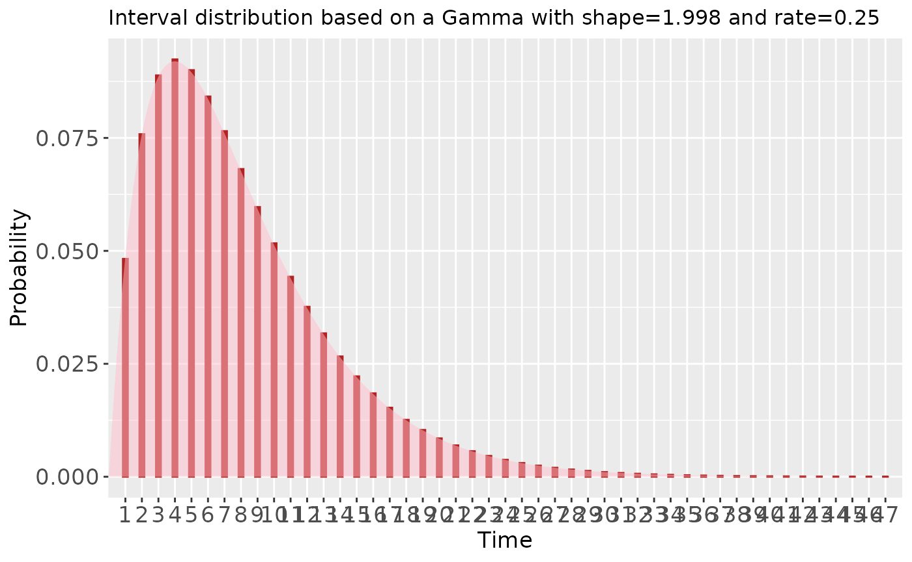
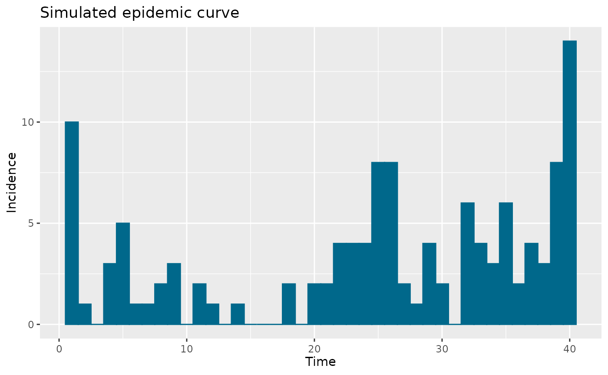
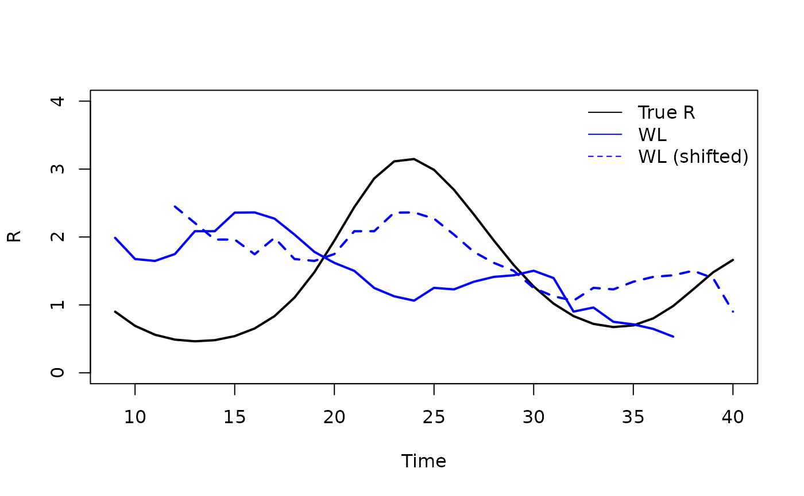
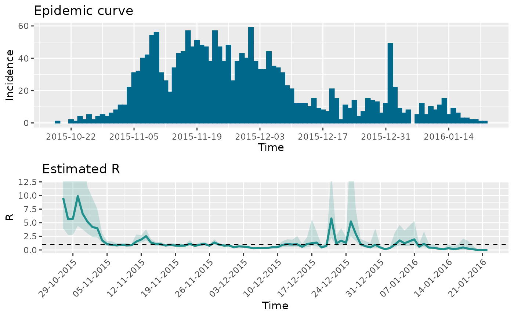
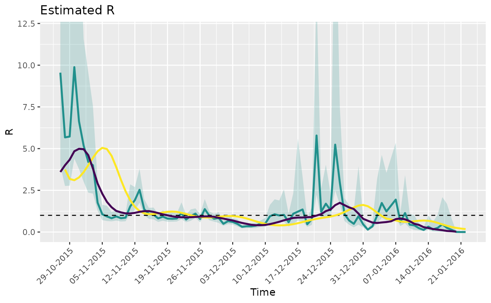

Validation of time-varying reproduction number estimation
Kylie Ainslie
2025-02-21
Source:vignettes/articles/rt_estimation_validation.Rmd
rt_estimation_validation.RmdIntroduction
The mitey package is a lightweight package designed to
provide easy implementation of the methods used in Ainslie
et al. 2024 to estimate epidemiological characteristics of scabies
transmission. However, these methods are more widely applicable than in
the context of scabies. One of the key functionalities of
mitey is the estimation of the time-varying case
reproduction number using data on time of symptom onset. The case
reproduction number
()
is defined as the average number of new infections that an individual
who becomes infected, or symptomatic, at a particular time point will go
on to cause1, and is useful in
retrospective analyses. The method of Wallinga and Lipsitch estimates
the time-varying case reproduction number by determining the likelihood
of an event occurring for every pair of time points2. The method requires no assumptions
beyond the specification of the serial interval distribution, making it
straightforward and easy to implement.
In this article, we will demonstrate how to use mitey to
estimate
using a synthetic data set and real data. We will also compare the
estimates from mitey to estimates from other R packages
that can be used for similar analyses, namely EpiEstim3 and EpiLPS4.
Synthetic data
First, we will generate a synthetic time series of incidence data
using the episim() function from EpiLPS which
uses a renewal equation model to generate the case incidence data based
on a Poisson or negative binomial process4. For full details see here.
episim() requires the specification of the (discrete)
serial interval distribution, which can be specified using the
Idist() function.
# specify serial interval distribution
mean_si <- 8
sd_si <- 5.66
# generate discrete serial interval distribution using EpiLPS::Idist
si_spec <- Idist(mean = mean_si, sd = sd_si, dist = "gamma")
plot(si_spec, titlesize = 12)
Now, using episim() we can generate incidence data by
specifying the generated serial interval distribution, the functional
form of the reproduction number (here Rpattern = 5), and
the length of the epidemic (here 40 days).
# set seed
set.seed(1234)
# generate data
t_end <- 40
datasim <- episim(si = si_spec$pvec, Rpattern = 5, endepi = t_end,
dist = "negbin", overdisp = 15)
epicurve(datasim$y, title = "Simulated epidemic curve")
Estimating the case reproduction number
Next, using the simulated incidence data datasim$y, we
can estimate the time-varying case reproduction number using the method
developed by Wallinga and Lipsitch2. We will use the
rt_estim() function within mitey.
rt_estim() expects an input data set (inc_dat)
with two columns inc (the number of new cases for each time
point) and onset_date (the time or date in which the new
cases occurred). rt_estim() also requires the specification
of the mean and standard deviation of the serial interval distribution
and the underlying serial interval distribution (it currently only
accepts “normal” and “gamma”).
# Estimate Rt with mitey::rt_estim()
t_vec <- seq(1, length(datasim$y), by = 1)
inc_dat <- data.frame(onset_date = t_vec, inc = datasim$y)
rt_estimated <- rt_estim(
inc_dat = inc_dat,
mean_si = mean_si,
sd_si = sd_si,
dist_si = "gamma"
)#> onset_date rt rt_adjusted
#> 1 1 Inf Inf
#> 2 2 35.4390029 35.4390049
#> 3 3 NaN NaN
#> 4 4 2.4083146 2.4083155
#> 5 5 0.9028469 0.9028477
#> 6 6 3.5467368 3.5467445Now, we can compare the estimated
values (solid blue line) to the true
that is outputted by episim(), here
datasim$Rtrue. However, an important thing to note is that
the “true”
is the instantaneous reproduction number. We are estimating the case
reproduction number, and therefore, our estimates should be shifted to
the left by one serial interval. When we shift the estimates by a serial
interval (blue dashed line), we see that our estimates are in agreement
with the true
.

To obtain confidence bounds for our estimated
values, we can use rt_estim_w_boot() and specify the number
of bootstrap samples using n_bootstrap = argument.
rt_estimated_boot <- rt_estim_w_boot(
inc_dat = inc_dat,
mean_si = gi_mean,
sd_si = gi_sd,
dist_si = "gamma",
n_bootstrap = 100
)Comparing methods
Using the estimRmcmc function within the
EpiLPS package, we can compare our estimates to those
produced my EpiLPS and EpiEstim (by specifying
Cori = TRUE) for estimating the instantaneous reproduction
number. We can also estimate the case reproduction number using the
method of Wallinga and Teuniswallinga2004? as
estimated by EpiEstim (by specifying
WTR = TRUE).
fitmcmc <- estimRmcmc(incidence = datasim$y, si = si_spec$pvec,
CoriR = TRUE, WTR = TRUE,
niter = 5000, burnin = 2000)
summary(fitmcmc)
#> Estimation of the reproduction number with Laplacian-P-splines
#> --------------------------------------------------------------
#> Total number of days: 40
#> Routine time (seconds): 3.075
#> Method: MCMC (with Langevin diffusion)
#> Hyperparam. optim method: Nelder-Mead
#> Hyperparam. optim convergence: TRUE
#> Mean reproduction number: 1.400
#> Min reproduction number: 0.350
#> Max reproduction number: 3.555
#> --------------------------------------------------------------
plot(tt, Rtrue, type = "l", xlab = "Time", ylab = "R", ylim = c(0,4),
lwd = 2)
lines(tt, fitmcmc$RLPS$R[-(1:mean_si)], col = "red", lwd = 2)
lines(tt, fitmcmc$RCori$`Mean(R)`[1:length(tt)], col = "green", lwd = 2)
lines(tt, fitmcmc$RWT$`Mean(R)`[-1], col = "purple", lwd = 2)
lines(tt, rt_WL_smooth[tt], col = "blue", lwd = 2)
lines(tt, rt_WL_shift[tt], col = "blue", lty = 2, lwd = 2)
legend("topright", col = c("black","red","green", "purple", "blue", "blue"),
c("True R","EpiLPS","EpiEstim", "WT", "WL", "WL (shifted)"),
bty = "n", lty = c(1,1,1,1,1,2))
Real data
Zika outbreak in Giradot, Colombia (2015)
To illustrate how to apply rt_estim() to real data and
compare it to other methods, we’ll use data on daily incidence of the
Zika virus disease in Giradot, Colombia from October 2015 to January
2016. The data is available from the outbreaks package and
is called zika2015.
lapply(zika2015, head, 10)
#> $incidence
#> [1] 1 2 1 4 2 5 2 4 5 4
#>
#> $dates
#> [1] "2015-10-19" "2015-10-22" "2015-10-23" "2015-10-24" "2015-10-25"
#> [6] "2015-10-26" "2015-10-27" "2015-10-28" "2015-10-29" "2015-10-30"
#>
#> $si
#> [1] 7.771909e-09 2.813233e-05 2.333550e-03 3.004073e-02 1.241007e-01
#> [6] 2.372892e-01 2.605994e-01 1.887516e-01 9.898834e-02 4.014149e-02
zika_epicurve <- epicurve(zika2015$incidence, dates = zika2015$date, datelab = "14d")
zika_epicurve
Now we’ll estimate the case reproduction number using
rt_estim().
# Estimate Rt with mitey::rt_estim()
inc_dat <- data.frame(onset_date = zika2015$dates, inc = zika2015$incidence)
rt_estimated <- rt_estim_w_boot(
inc_dat = inc_dat,
mean_si = 7,
sd_si = 1.5,
dist_si = "gamma",
n_bootstrap = 100
)
# Create the plot
r_plot <- ggplot(rt_estimated$results %>%
filter(onset_date > min(onset_date) + 7,
!is.na(median_rt_adjusted)),
aes(x = onset_date)) +
geom_ribbon(aes(ymin = lower_rt_adjusted, ymax = upper_rt_adjusted), fill = "#21908C", alpha = 0.2) +
geom_line(aes(y = median_rt_adjusted, color = "WL"), size = 1) +
geom_hline(yintercept = 1, linetype = "dashed", color = "black") +
coord_cartesian(ylim = c(0,12)) +
scale_x_date(date_breaks = "7 days", date_labels = "%d-%m-%Y") +
scale_color_manual(values = c("WL" = "#21908C")) +
scale_fill_manual(values = c("WL" = "#21908C")) +
labs(x = "Time", y = "R", title = "Estimated R") +
guides(color = "none", fill = "none") +
theme(axis.text.x = element_text(angle = 45, hjust = 1))
#> Warning: Using `size` aesthetic for lines was deprecated in ggplot2 3.4.0.
#> ℹ Please use `linewidth` instead.
#> This warning is displayed once every 8 hours.
#> Call `lifecycle::last_lifecycle_warnings()` to see where this warning was
#> generated.
# show Rt plot with epicurve
gridExtra::grid.arrange(zika_epicurve, r_plot, nrow = 2, ncol = 1)
Compare with EpiLPS and EpiEstim
Below we compare the estimates using the Walling and Lipsitch method
(WL) with those of EpiLPS and the Wallinga and Teunis
method (WT) produced by EpiEstim. We see similar results
and see the expected shif in the estimates of EpiLPS because it is
estimating the instantaneous reproduction number. Additionally, it is
important to note that the below WL estimates have not been
smoothed.
si <- Idist(mean = 7, sd = 1.5)
epifit <- estimR(zika2015$incidence, dates = zika2015$dates, si = si$pvec, WTR = TRUE)
r_plot +
geom_line(data = epifit$RLPS[-c(1:7),], aes(x = Time, y = R, color = "EpiLPS"), size = 1, linetype = "solid") +
geom_line(data = epifit$RWT, aes(x = t_end + zika2015$dates[1], y = `Mean(R)`, color = "WT (EpiEstim)"), size = 1, linetype = "solid") +
scale_color_manual(values = c("WL" = "#21908C", "EpiLPS" = "#FDE725", "WT (EpiEstim)" = "#440154")) +
labs(color = "Method")
#> Scale for colour is already present.
#> Adding another scale for colour, which will replace the existing scale.